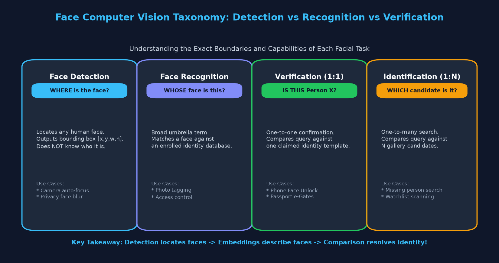
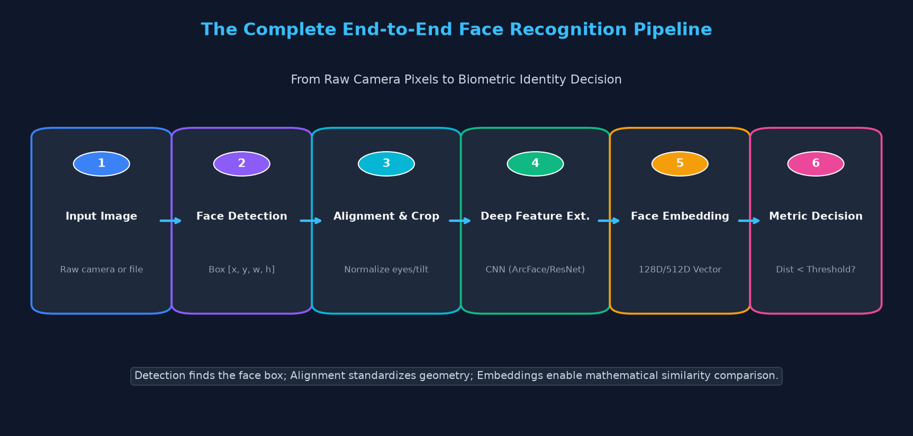
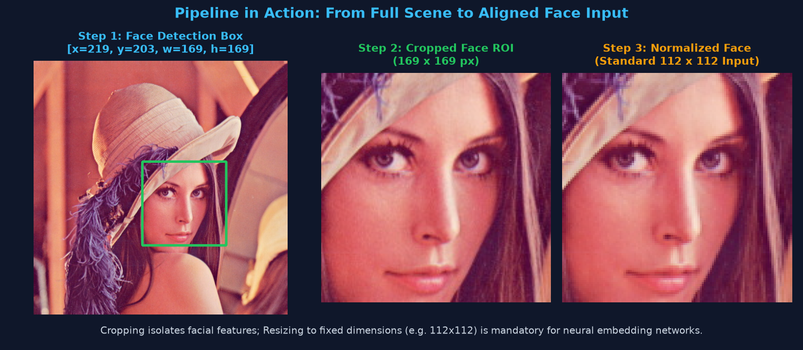
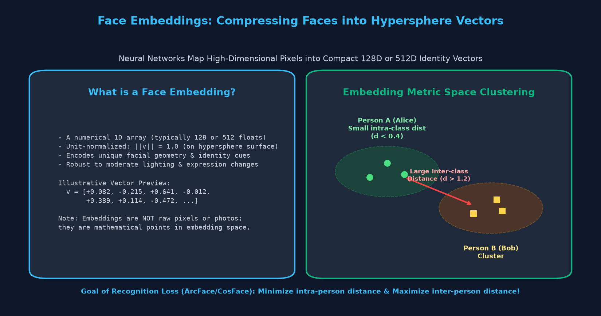
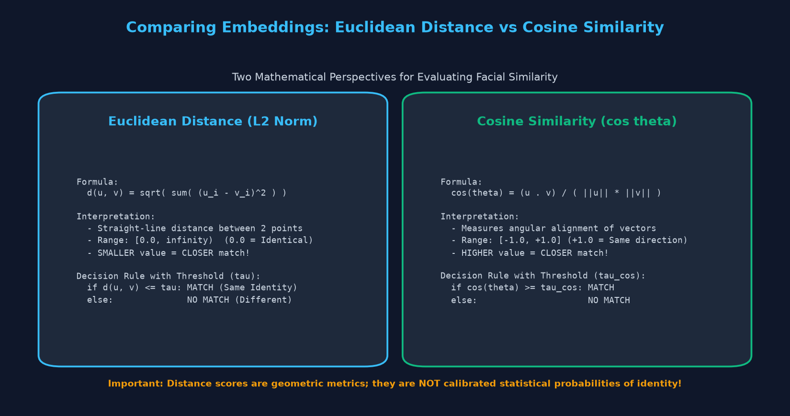
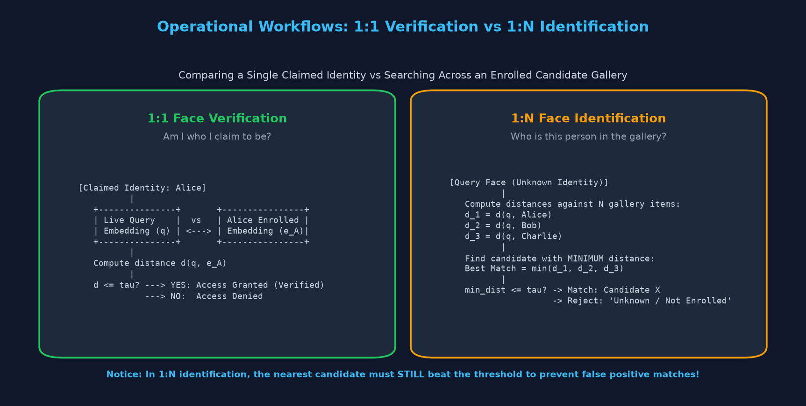

Face Embeddings, Feature Space Metric Geometry, 1:1 Verification, and 1:N Gallery Identification
Topic 16 mein humne Face Detection dekha, jiska kaam sirf itna tha ki tasveer mein chehra kahan maujood hai (bounding box [x, y, w, h]).
Lekin detection ye kabhi nahi bata sakta ki wo chehra kiska hai!
Face Recognition ek aisi biometric technology hai jo kisi vyakti ke chehre ko pehle se enrolled reference data ke sath compare karke uski identity confirm ya search karti hai.

| Concept | Core Question Answered | Practical Real-World Example |
|---|---|---|
| Face Detection | "Where is a face?" | Camera auto-focus, privacy face blur, snapchat filter alignment. |
| Face Recognition | "Whose face is this?" | Broad umbrella term covering identification and verification. |
| Face Verification (1:1) | "Is this Person X?" | iPhone Face ID unlock, Airport e-Passport boarding gate. |
| Face Identification (1:N) | "Which enrolled candidate is it?" | Automatic biometric office attendance, missing person search. |
Industrial face recognition systems ek 6-stage structured pipeline follow karte hain:

[x, y, w, h] find karna.112 × 112) par crop karna.Neeche diya gaya code image ko load karta hai, face localize karta hai aur neural network ke expected input size (112×112) par crop aur resize karta hai:
import cv2
# 1. Image load karein
img = cv2.imread('lena.jpg')
gray = cv2.cvtColor(img, cv2.COLOR_BGR2GRAY)
# 2. Haar Cascade se face detect karein
cascade_path = cv2.data.haarcascades + 'haarcascade_frontalface_default.xml'
face_cascade = cv2.CascadeClassifier(cascade_path)
faces = face_cascade.detectMultiScale(gray, scaleFactor=1.1, minNeighbors=5, minSize=(30, 30))
# 3. Face ROI crop karein aur standardized 112x112 input par resize karein
for (x, y, w, h) in faces:
face_roi = img[y:y+h, x:x+w]
normalized_input = cv2.resize(face_roi, (112, 112), interpolation=cv2.INTER_AREA)
print(f"Original Scene: {img.shape[:2]}")
print(f"Detected Box: x={x}, y={y}, w={w}, h={h}")
print(f"Normalized Model Input Shape: {normalized_input.shape}")
cv2.imwrite('aligned_face_crop.jpg', normalized_input)

Pehle classical computer vision mein log direct pixels ko compare karte the (pixel template matching), lekin agar roshni badal jaaye ya person zara sa muskura de, to pixel values completely change ho jaati theen!
Modern AI iska solution Face Embeddings (Feature Vectors) ke roop mein deta hai:
||v|| = 1.0), jisse wo high-dimensional sphere ki surface par ek mathematical point ban jaata hai.
Jab hamare paas do embeddings (e.g. u aur v) aa jaate hain, to unhe compare karne ke do standard mathematical tareeqe hote hain:

Do points ke beech ka straight-line geometric distance.
Formula: d(u, v) = √∑(ui - vi)²
Rule: Jitna CHHOTA distance hoga, chehre utne zyada SIMILAR honge!
Agar d ≤ τ (threshold), to dono same person hain.
Do vectors ke beech ke angle ka cosine measure karta hai.
Formula: cos(θ) = (u • v) / (||u|| × ||v||)
Rule: Jitna BADA score hoga (+1.0 ke kareeb), chehre utne zyada SIMILAR honge!
Agar cos ≥ τcos, to match confirm hota hai.
Neeche diye gaye code mein hum do alag-alag photos ke 128D vectors ke beech Euclidean distance aur Cosine similarity compute karte hain:
import numpy as np
# Helper functions for distance and similarity
def euclidean_distance(u, v):
return float(np.linalg.norm(u - v))
def cosine_similarity(u, v):
return float(np.dot(u, v) / (np.linalg.norm(u) * np.linalg.norm(v)))
# Illustrative unit-normalized 128D embedding vectors
np.random.seed(42)
alice_enrolled = np.random.randn(128)
alice_enrolled /= np.linalg.norm(alice_enrolled)
# Same person with slight real-world variation (pose/expression)
alice_query = alice_enrolled + np.random.normal(0, 0.04, 128)
alice_query /= np.linalg.norm(alice_query)
# Completely different person (Bob)
bob_query = np.random.randn(128)
bob_query /= np.linalg.norm(bob_query)
# Calculations
dist_same = euclidean_distance(alice_enrolled, alice_query)
sim_same = cosine_similarity(alice_enrolled, alice_query)
dist_diff = euclidean_distance(alice_enrolled, bob_query)
sim_diff = cosine_similarity(alice_enrolled, bob_query)
print(f"Alice vs Alice (Same Person): Euclidean Dist = {dist_same:.4f} | Cosine Sim = {sim_same:.4f}")
print(f"Alice vs Bob (Different): Euclidean Dist = {dist_diff:.4f} | Cosine Sim = {sim_diff:.4f}")
0.4174 hai (aur cosine similarity 0.9129), jabki do alag vyaktiyon ka distance 1.3937 hai. Yahi mathematical boundary recognition systems ko accurate banati hai!
Production deployments mein recognition ko do primary workflows mein divide kiya jaata hai:

# -------------------------------------------------------------
# 1:1 Face Verification Logic (Claimed Identity)
# -------------------------------------------------------------
tau = 0.60 # Operating threshold
def verify_claimed_identity(query_emb, enrolled_template, threshold=0.60):
dist = euclidean_distance(query_emb, enrolled_template)
is_match = dist <= threshold
return is_match, dist
match_alice, d_a = verify_claimed_identity(alice_query, alice_enrolled, tau)
print(f"1:1 Verification (Alice Claim): Dist={d_a:.4f} <= {tau} -> Match={match_alice} (Access Granted)")
match_bob, d_b = verify_claimed_identity(bob_query, alice_enrolled, tau)
print(f"1:1 Verification (Bob Claim): Dist={d_b:.4f} <= {tau} -> Match={match_bob} (Access Denied)")
# -------------------------------------------------------------
# 1:N Gallery Search with Rejection Threshold
# -------------------------------------------------------------
gallery = {
"Alice": alice_enrolled,
"Bob": bob_query,
"Charlie": np.random.randn(128) / np.linalg.norm(np.random.randn(128))
}
def identify_against_gallery(query_emb, enrolled_gallery, threshold=0.60):
best_candidate = None
min_dist = float("inf")
# Sabhi gallery templates ke sath distance calculate karein
for name, template in enrolled_gallery.items():
d = euclidean_distance(query_emb, template)
if d < min_dist:
min_dist = d
best_candidate = name
# REJECTION THRESHOLD: Agar nearest candidate bhi threshold se door hai to Reject karein!
if min_dist <= threshold:
return f"Identified as {best_candidate}", best_candidate, min_dist
else:
return "Unknown / Intruder (Rejected)", None, min_dist
# Test 1: Alice query
decision_1, name_1, d_1 = identify_against_gallery(alice_query, gallery, tau)
print(f"\n1:N Identification [Alice]: {decision_1} (d={d_1:.4f})")
# Test 2: Un-enrolled intruder query
intruder = np.random.randn(128) / np.linalg.norm(np.random.randn(128))
decision_2, name_2, d_2 = identify_against_gallery(intruder, gallery, tau)
print(f"1:N Identification [Intruder]: {decision_2} (Nearest={name_2}, d={d_2:.4f})")
argmin(distance) lekar use confirmed identity mat maanein!
Agar koi naya intruder aata hai jiska data gallery mein nahi hai, tab bhi koi na koi gallery candidate mathematically "nearest" zaroor aayega.
Agar aapne rejection threshold (min_dist ≤ τ) check nahi lagaya, to system har anjaan shakhs ko galat pehchan de dega (False Positive Match)!
Face recognition ke itihaas mein do mukhya yug (eras) rahe hain:
| Architecture Family | Famous Algorithms | Strengths | Limitations |
|---|---|---|---|
| Classical Statistical Methods | Eigenfaces (PCA), Fisherfaces (LDA), LBPH (Local Binary Patterns) | Chhote datasets par fast training, CPU lightweight, simple math. | Roshni, angle, aur expression badalne par accuracy gir jaati hai. |
| Modern Deep Metric Learning | FaceNet (Triplet Loss), ArcFace (Additive Angular Margin), CosFace | Massive accuracy (>99.5% on LFW benchmark), extreme pose & lighting tolerance. | Heavy training compute, millions of parameters, GPU acceleration preferred. |
• Opt-in Device Unlock: Smartphone unlock systems biometric embeddings ko secure hardware enclave mein verify karte hain.
• Controlled Facility Access: High-security data centers mein contactless identity verification.
• Photo Album Indexing: Apple Photos aur Google Photos automatically same person ki photos cluster karte hain.
• E-KYC Verification: Banking apps mein passport photo ke sath live selfie match karna.
• Aging & Appearance Changes: Daadhi badhana, wajan badalna, ya age ke sath embeddings shift hoti hain.
• Demographic Performance Discrepancies: Agar training data diverse na ho, to detector accuracy different demographic groups par vary kar sakti hai.
• FAR vs FRR Trade-off: False Acceptance Rate (galat ko entry milna) aur False Rejection Rate (asli user reject hona) ke beech balance banana padta hai.
dist <= tau), jabki Cosine similarity mein BADA number match hota hai (sim >= tau). Dono ko mix karne se 100% false decisions aate hain!
0.45 ka matlab "45% chance" nahi hai. Yeh ek geometric vector distance hai jiska scale model architecture aur loss function par depend karta hai.
Apni understanding test karne ke liye questions par click karein aur answer reveal karein:
min_dist <= tau) nahi hoga, to system intruder ko falsely authenticate kar dega.